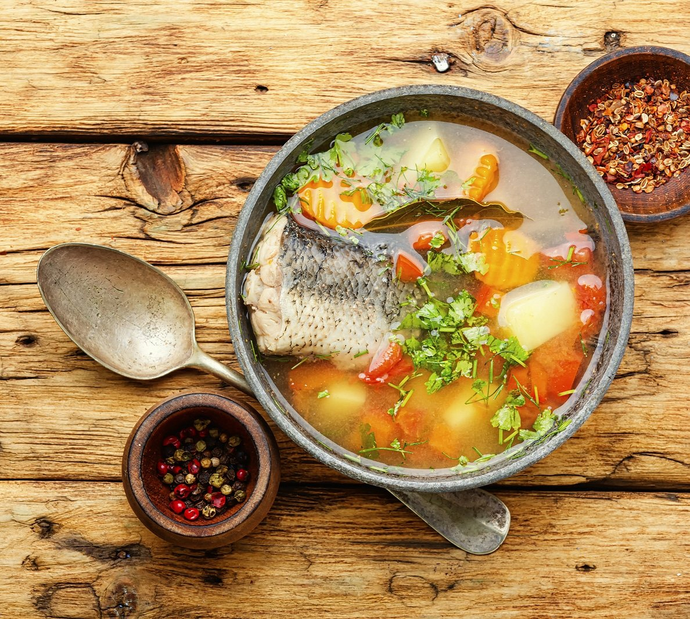
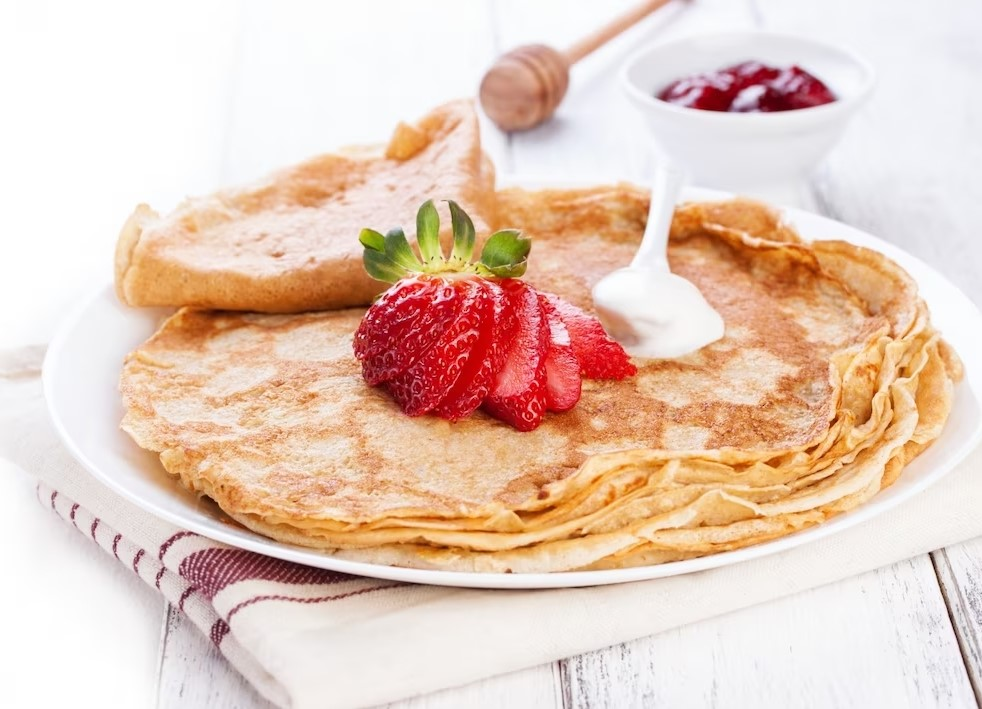
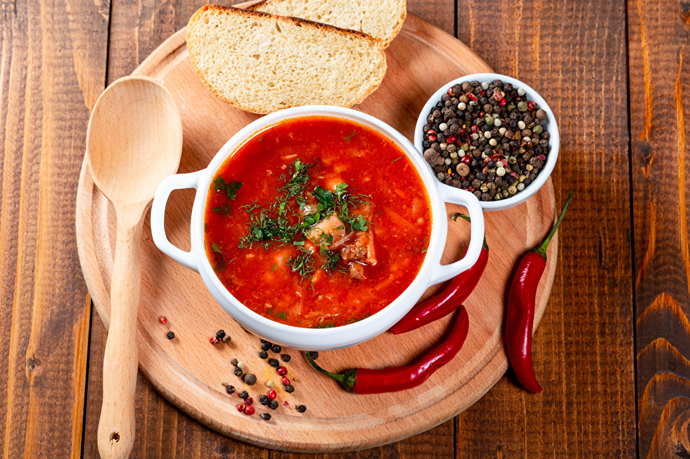
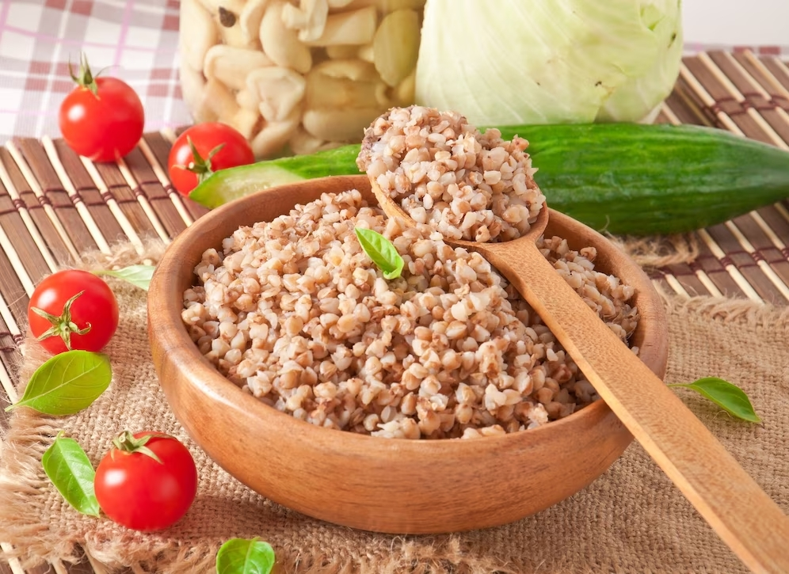
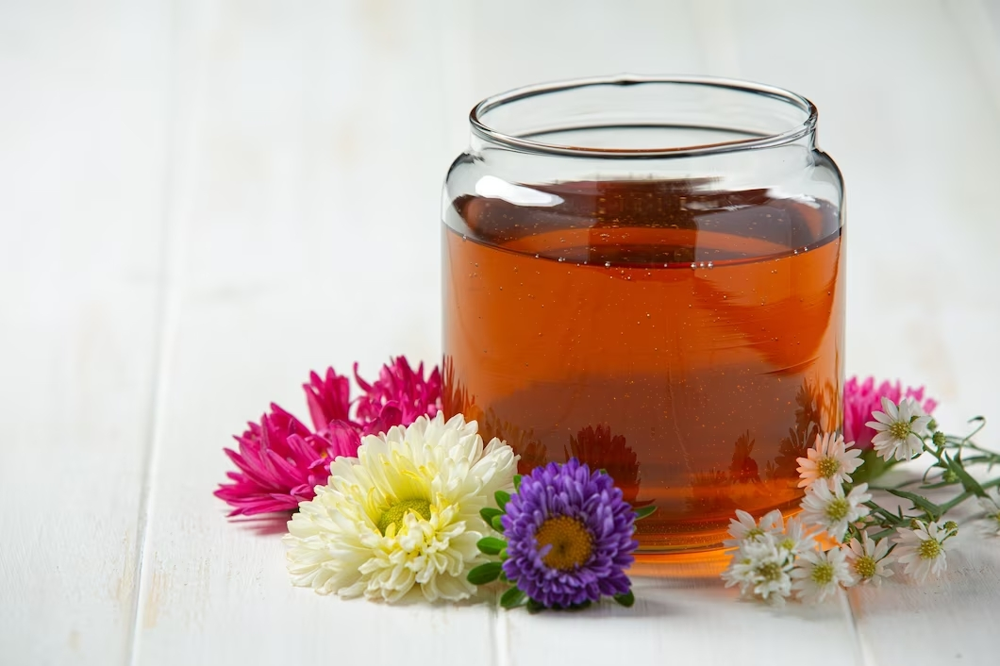
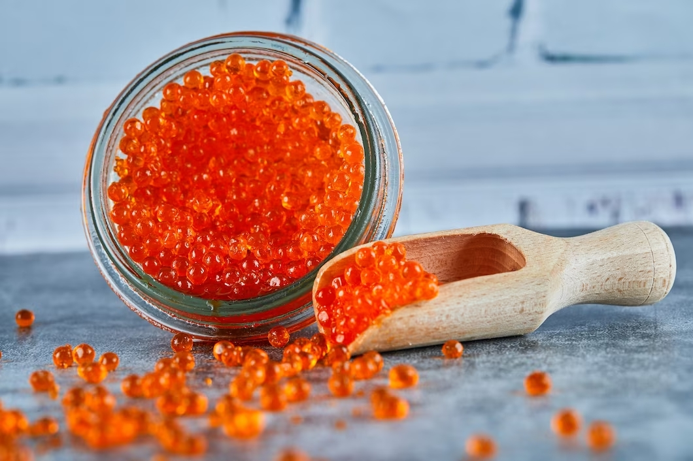

Ингредиенты

Уха
Ингредиенты:
- Свежая рыба (щука, окунь, сазан) - 1 кг
- Картофель - 5 штук
- Лук - 1 штука
- Морковь - 2 штуки
- Перец горошком - 5 штук
- Лавровый лист - 2 штуки
- Соль - по вкусу
- Вода - 2 литра

Блины
Ингредиенты:
- Молоко - 500 мл
- Пшеничная мука - 250 г
- Яйца - 2 штуки
- Сахар - 1 столовая ложка
- Соль - 1/2 чайной ложки
- Растительное масло - для жарки

Борщ
Ингредиенты:
- Свекла - 2 шт.
- Капуста - 300 г
- Морковь - 2 шт.
- Лук репчатый - 2 шт.
- Картофель - 4 шт.
- Томатная паста - 2 ст. ложки
- Чеснок - 2 зубчика
- Укроп - 1 пучок
- Лавровый лист - 2 шт.
- Сметана - для подачи
- Соль, перец - по вкусу

Котлеты по-киевски
Ингредиенты:
- Филе куриной грудки - 500 г
- Соль - 1 чайная ложка
- Перец черный молотый - 1/2 чайной ложки
- Сливочное масло - 150 г
- Сухари панировочные - 1 стакан
- Яйца куриные - 2 шт.
- Мука - 2 ст. ложки

Каша
Ингредиенты:
- Гречневая крупа - 1 стакан
- Вода - 2 стакана
- Молоко - 1 стакан
- Соль - по вкусу
- Масло сливочное - для подачи

Медовуха
Ингредиенты:
- Мед - 1 стакан
- Вода - 3 стакана
- Дрожжи - 1 чайная ложка
- Корица - по вкусу
- Гвоздика - по вкусу

Икра
Ингредиенты:
- Баклажаны - 3 штуки
- Морковь - 2 штуки
- Лук репчатый - 2 штуки
- Помидоры - 3 штуки
- Перец болгарский - 2 штуки
- Растительное масло - для жарки
- Соль - по вкусу